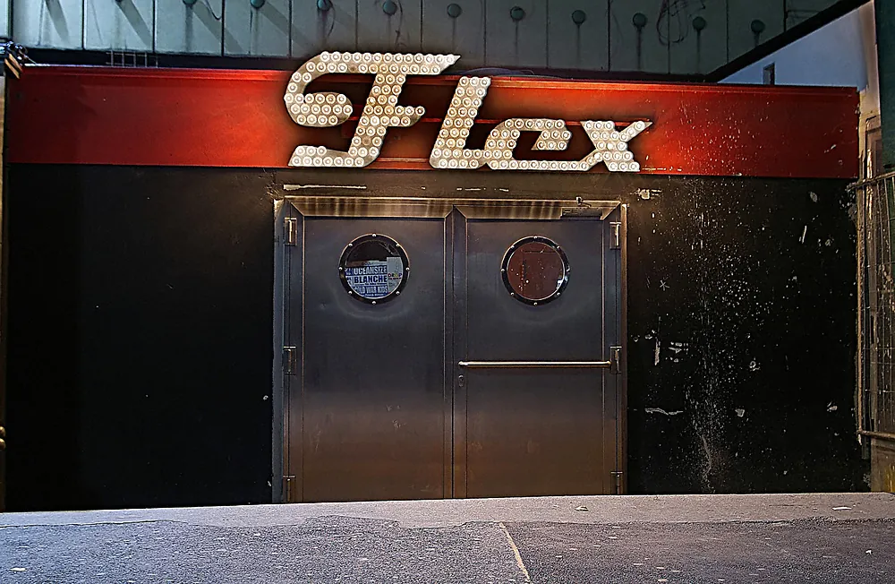
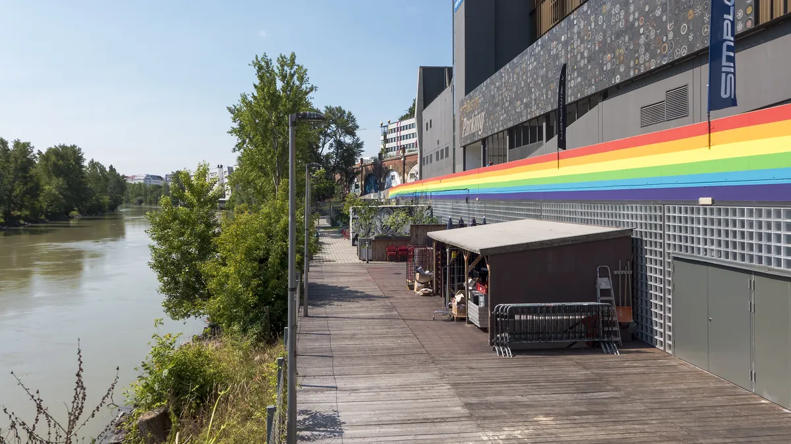

Vienna clubs
The best clubs in Vienna, from Flex to Grelle Forelle
A canal tunnel, railway arches, shipping containers and a crystal-ceilinged room at Karlsplatz: the Vienna clubs open now, and what happened to Pratersauna.
Vienna after Pratersauna.
The best clubs in Vienna are a short list, and the list changed this year. Pratersauna, long the city's most talked-about club, stopped operating as a nightclub in December 2025 and went into insolvency in January 2026. What is left is a spread of rooms that each do one thing well: a tunnel by the canal, a pair of railway arches in the Spittelau area, a container club by the old Praterstern station and a crystal-ceilinged room at Karlsplatz. This guide covers the Vienna clubs open now, what each is for, and what happened to the one that closed.
The best clubs in Vienna now.
| Club | Area | Music and character | Entry |
|---|---|---|---|
| FlexGoogle MapsResident Advisor | Donaukanal, Augartenbrücke | A disused U4 tunnel on the canal, open since 1995, with concerts and club nights | Club events listed 16+ in October 2026 |
| Grelle ForelleGoogle MapsResident Advisor | Spittelauer Lände | Two floors, Kitchenfloor and Clubfloor, open since December 2011 | 21+, no photos, video or audio recording |
| Das WerkGoogle MapsResident Advisor | Spittelauer Lände | Five railway arches, in the Stadtbahn arches since spring 2013 | Check the night |
| FlucGoogle MapsResident Advisor | Praterstern | Shipping-container club and concert space, reopened in 2006 | Open Monday to Saturday |
| SASS Music ClubGoogle MapsResident Advisor | Karlsplatz | Crystal ceiling and gold-leaf walls, club nights Thursday to Saturday | 18+ with ID |
| Das Techno CafeGoogle MapsResident Advisor | Volksgarten Pavillon | Weekly Tuesday night since 1996, in the warm months | Open-door policy |
Flex, the tunnel by the canal.
Flex opened on New Year's Eve 1989/90 at Arndtstraße in Vienna's 12th district, run by people from the Aegidigasse squat. On 1 October 1995 it moved to its current home, a disused U4 tunnel on the Donaukanal by the Augartenbrücke. A café was added in 2007.

Its programme mixes concerts and club nights, and Ellen Allien and Jeff Mills are among the DJs Wikipedia lists as having played there. Flex's own October 2026 listings mark its club events 16+, so check the age on the night you want.
Vienna techno clubs: Grelle Forelle and Das Werk.
Two of the clubs people search for as Vienna techno clubs are on the same street, the Spittelauer Lände, by the Donaukanal.
Grelle Forelle opened in December 2011 at Spittelauer Lände 12 and runs on two floors, the Kitchenfloor and the Clubfloor, with a Lambda Labs sound system. Its own site sets the rules before anything else: guests must be 21 or over, and photos, video and audio recording are strictly banned. Capacity figures for the club disagree between sources, so none is given here.

Das Werk is a club in five railway arches on the same Spittelauer Lände. It began in 2006 as a small association founded by Stefan Stürzer, found its first venue on Neulerchenfelder Straße, and has been in the Stadtbahn arches since spring 2013. Sources give conflicting years for when it first opened its doors, so only those milestones are stated here.
For a recording, HÖR ON TOUR Vienna was held at Grelle Forelle with MIXED VIENNA, and Riana Holley played it on 3 June 2026.
Fluc, SASS and the Volksgarten.
Fluc opened on 1 May 2002 as the platform of the artist group Dynamo at the old Praterstern station, in a space of about 85 square metres. The station was demolished in 2005, and Fluc reopened on 1 April 2006 with a Fennesz performance, in 21 office and shipping containers, with a second room, Fluc_Wanne, in a disused underpass. Its stated mission is "Dance as Utopia". It is open Monday to Saturday and closed on Sunday, with concerts nearly every night.
SASS Music Club, at Karlsplatz 1, has been running since 2007. It is the central, polished option: a crystal ceiling, gold-leaf walls and a Pro Performance sound system, 18+ with ID. Thursday to Saturday are club nights, and on Sunday morning it runs an afterhour called Morgengymnastik.
Das Techno Cafe is a weekly night with a 30-year history. Sandra Kendl started it on 9 January 1996 at Lokal Scheffel in the 8th district, and after four months it moved to the Volksgarten Pavillon, a 1951 building by Oswald Haerdtl. It runs on Tuesdays in the warm months with an open-door policy, and its 30th-anniversary season ran from 28 April to 8 September 2026.
What happened to Pratersauna.
Pratersauna opened as a club in July 2009, in a 1965 sauna building in the Prater, after the sauna itself closed in 2008. It closed in early 2016 and reopened on 29 April 2016 under the Ho's Dots Group. A new operator, Prater Nostra GmbH, took over in March 2025.
It stopped operating in mid-December 2025. Its owners sued over unpaid rent of 232,467.21 euros, and insolvency proceedings were opened on 21 January 2026.
On 23 July 2026 the site reopened as an outdoor "Urban Pool Club", Dayclub Edison Pratersauna, under Nikolaus Gutmann. It ran Thursday to Sunday from noon to 10 p.m., with entry at 7 euros and no techno. The plan was a trial of about ten weeks, to the end of September 2026, with a Christkindlmarkt in winter. Gutmann said no indoor nightclub is planned, and the owner of the building has said it will not pursue alternatives for it. What happens to the site after September 2026 had not been confirmed in anything read for this guide.
Vienna nightlife by area.
Vienna nightlife is spread out, and the clubs above cluster into three parts of town.
- The Donaukanal: Flex at the Augartenbrücke and, a short distance up the canal, the Spittelauer Lände with Grelle Forelle and Das Werk.
- Karlsplatz and the first district: SASS at Karlsplatz 1 and the Volksgarten Pavillon on Tuesdays. Club U sits in the basement of an Otto Wagner pavilion at Karlsplatz, with nights running from techno through soul and hip-hop, Wednesday to Saturday.
- The Prater side: Fluc by Praterstern, and the Pratersauna site, which is no longer a club.
Vienna nightlife also happens outside the clubs. Boiler Room filmed in an abandoned hotel on Sofienalpenstraße in June 2019, with a line-up of DJ Bone, Objekt, Paranoid London, Vaal, POLYXENE, Misonica and vince.
In August 2021 it held a surprise day rave at Draussen, Talpagasse 8, in an industrial space, with Mall Grab, JASSS, DJ Python, Bella Boo and Giuseppe Leonardi.
DJ Python played the same Draussen day.
The Vienna sound.
Vienna has recorded history beyond its club rooms. Kruder & Dorfmeister formed in the city in 1993 and put out the G-Stoned EP that year, then released the K&D Sessions on !K7 in 1998. Peter Kruder played a Boiler Room Vienna set in 2015.
Mego was founded in Vienna in 1994 by Ramon Bauer, Andreas Pieper, Peter Meininger and, from 1995, Peter Rehberg. It closed in 2005 and relaunched as Editions Mego in 2006. Fennesz's Endless Summer came out on Mego in 2001, and Pitchfork gave it 9.4. Fennesz is the same artist who opened Fluc's 2006 reopening.
The producer Dorian Concept released Joined Ends on Ninja Tune on 20 October 2014. His Boiler Room Vienna session, on 16 September 2014, shared a bill with Sixtus Preiss, Mieux and Cid Rim b2b The Clonious.
Vienna clubs FAQ.
Is Pratersauna still open?
No, not as a nightclub. It stopped operating in December 2025, entered insolvency in January 2026 and reopened in July 2026 only as an outdoor day club with no techno, planned to run to the end of September 2026. No indoor club reopening is planned.
What is the best techno club in Vienna?
Grelle Forelle is the most direct answer, as a two-floor club on the Spittelauer Lände with a Lambda Labs system, open since 2011. Das Werk, in the arches next door, and Flex, in its tunnel on the canal, are the other two to weigh against it.
Can you take photos in Vienna clubs?
Not in Grelle Forelle, whose own site bans photos, video and audio recording. Other venues set their own rules, so check each one.
What age do you need to be to enter Vienna clubs?
It varies by club. Grelle Forelle is 21+ and SASS Music Club is 18+ with ID. Flex lists its club events as 16+ in its October 2026 programme.
Where should you go for Vienna nightlife?
Start at the Donaukanal, where Flex and the Spittelauer Lände clubs are within one stretch of the water, and add Karlsplatz for SASS.
Sources.
- Wikipedia (German): Pratersauna
- Resident Advisor: Pratersauna insolvency (January 2026)
- Falter: Pratersauna, unpaid rent and insolvency (December 2025 to January 2026)
- heute.at: Pratersauna Urban Pool Club (27 July 2026)
- Grelle Forelle: about, age and photo policy
- Flex: programme, October 2026
- Wikipedia: Flex
- vienna.at: Fluc, opening and hours
- Wikipedia (German): Volksgarten and its pavilion
- Wikipedia: Mego
- Boiler Room: Vienna sessions, 2014, 2015, 2019 and 2021
- Photographs: Wikimedia Commons, credited in each caption.
Continue reading
Read next.
 Rave spots~10 min read
Rave spots~10 min readBerghain: Panorama Bar, Sound and Residents
Berghain explained: the former power station, Panorama Bar upstairs, Halle am Berghain, the Kantine, and the Ostgut Ton label.
Read article → Rave spots~11 min read
Rave spots~11 min readBest Clubs in NYC: Nightclubs for House and Techno, Then and Now
Nowadays, Basement, Public Records, Good Room and Elsewhere: the best clubs in NYC for house and techno now, and the history from the Loft to Output.
Read article → Rave spots~7 min read
Rave spots~7 min readBest Clubs in Tokyo: WOMB, Contact and the Ban on Dancing
WOMB, Contact, Vent and Circus Tokyo: the best clubs in Tokyo for house, techno and bass music, and the 68-year law against dancing that shaped them.
Read article → Rave spots~6 min read
Rave spots~6 min readBest Clubs in Budapest: A38, Instant-Fogas and Turbina
A38's converted cargo ship, the seven rooms of Instant-Fogas and Turbina's techno nights: the best clubs in Budapest now, and the ruin bars several grew out of.
Read article →